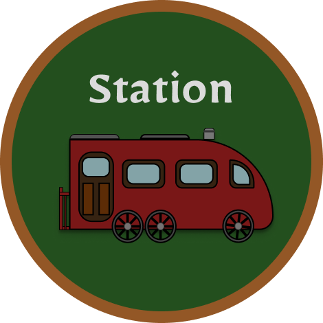

<template id="project-template">
  <div class="project-wrapper">
    <div class="nav-bar">
      <div class="home-logo">
        <a href="/"></a>
      </div>
      <nav-dropdown-component></nav-dropdown-component>
    </div>


    <!-- Dynamic rendering of project content -->
    <div id="project-content"></div>

    <div class="pagination">
      <pagination-button-component
        data-button-type="prev"
      ></pagination-button-component>
      <pagination-button-component
        data-button-type="next"
      ></pagination-button-component>
    </div>
  </div>
</template>
